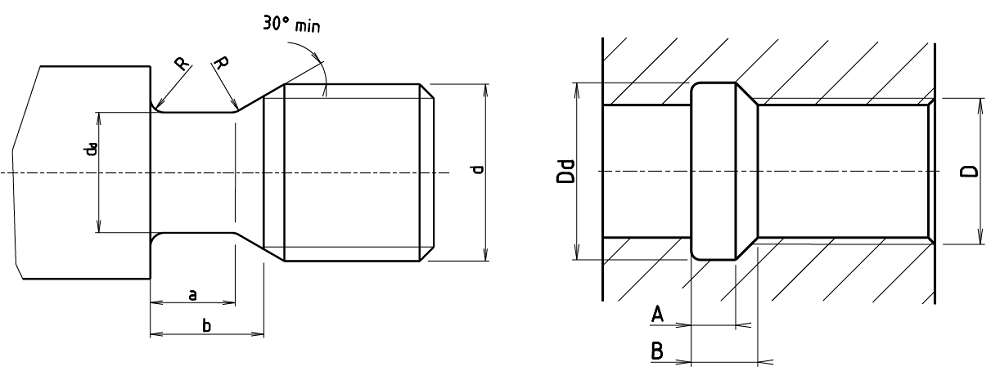

Rozměry v milimetrech. Značení odpovídá náčrtu nahoře.
Vnější drážka: ISO 4755:1983; a = g1 min, b = g2 max, dd = dg. Pro d ≤ 3 mm platí h12, pro větší průměry h13. Řádek P = 0,2 mm je historické rozšíření podle Draštíka, s. 132, a není řádkem ISO 4755.
Vnitřní drážka: historické rozměry A, B, Dd podle F. Draštíka a kol., Strojnické tabulky pro konstrukci i dílnu, 2. vydání, 1999, s. 132. Zachovávají význam původního náčrtu a jeho záhlaví Amax, Bmin. Nejde o rozměry g1 min, g2 max drážky podle DIN 76-1; jejich meze nelze zaměnit. Sloupce poloměrů jsou oddělené: pro P = 4,5 mm je vnější R = 2,5 mm, vnitřní R = 2 mm.
Zdroje: ISO 4755:1983; DIN 76-1:2016, tab. 2; historické rozšíření, s. 132.
| Rozteč P | Závity hrubé řady | Drážka za vnějším závitem | Drážka za vnitřním závitem | R vnější ≈ |
R vnitřní ≈ |
||||||
|---|---|---|---|---|---|---|---|---|---|---|---|
| obvyklá | úzká | ||||||||||
| dd h12 / h13 |
amin. | bmax. | Dd H13 | Amax. | Bmin. | Amax. | Bmin. | ||||
| 0,2 | M0,8 | d - 0,3 | 0,32 | 0,6 | D + 0,1 | 0,8 | 1,2 | 0,5 | 0,9 | 0,1 | 0,1 |
| 0,25 | M1; M1,2 | d - 0,4 | 0,4 | 0,75 | D + 0,1 | 1,0 | 1,4 | 0,6 | 1,0 | 0,12 | 0,12 |
| 0,3 | M1,4 | d - 0,5 | 0,5 | 0,9 | D + 0,1 | 1,2 | 1,6 | 0,75 | 1,2 | 0,16 | 0,16 |
| 0,35 | M1,6; M1,8 | d - 0,6 | 0,6 | 1,05 | D + 0,2 | 1,4 | 1,9 | 0,9 | 1,4 | 0,16 | 0,16 |
| 0,4 | M2 | d - 0,7 | 0,6 | 1,2 | D + 0,2 | 1,6 | 2,2 | 1 | 1,6 | 0,2 | 0,2 |
| 0,45 | M2,2; M2,5 | d - 0,7 | 0,7 | 1,35 | D + 0,2 | 1,8 | 2,4 | 1,1 | 1,7 | 0,2 | 0,2 |
| 0,5 | M3 | d - 0,8 | 0,8 | 1,5 | D + 0,3 | 2 | 2,7 | 1,25 | 2,0 | 0,2 | 0,2 |
| 0,6 | M3,5 | d - 1 | 0,9 | 1,8 | D + 0,3 | 2,4 | 3,3 | 1,5 | 2,4 | 0,4 | 0,4 |
| 0,7 | M4 | d - 1,1 | 1,1 | 2,1 | D + 0,3 | 2,8 | 3,8 | 1,75 | 2,75 | 0,4 | 0,4 |
| 0,75 | M4,5 | d - 1,2 | 1,2 | 2,25 | D + 0,3 | 3 | 4 | 1,9 | 2,9 | 0,4 | 0,4 |
| 0,8 | M5 | d - 1,3 | 1,3 | 2,4 | D + 0,3 | 3,2 | 4,2 | 2 | 3,0 | 0,4 | 0,4 |
| 1,0 | M6; M7 | d - 1,6 | 1,6 | 3 | D + 0,5 | 4 | 5,2 | 2,5 | 3,7 | 0,6 | 0,6 |
| 1,25 | M8 | d - 2 | 2 | 3,75 | D + 0,5 | 5 | 6,7 | 3,2 | 4,9 | 0,6 | 0,6 |
| 1,5 | M10 | d - 2,3 | 2,5 | 4,5 | D + 0,5 | 6 | 7,8 | 3,8 | 5,6 | 0,8 | 0,8 |
| 1,75 | M12 | d - 2,6 | 3 | 5,25 | D + 0,5 | 7 | 9,1 | 4,3 | 6,4 | 1 | 1 |
| 2 | M14; M16 | d - 3 | 3,4 | 6 | D + 0,5 | 8 | 10,3 | 5 | 7,3 | 1 | 1 |
| 2,5 | M18; M20; M22 | d - 3,6 | 4,4 | 7,5 | D + 0,5 | 10 | 13 | 6,3 | 9,3 | 1,2 | 1,2 |
| 3 | M24; M27 | d - 4,4 | 5,2 | 9 | D + 0,5 | 12 | 15,2 | 7,5 | 10,7 | 1,6 | 1,6 |
| 3,5 | M30; M33 | d - 5 | 6,2 | 10,5 | D + 0,5 | 14 | 17,7 | 9 | 12,7 | 1,6 | 1,6 |
| 4 | M36; M39 | d - 5,7 | 7 | 12 | D + 0,5 | 16 | 20 | 10 | 14,0 | 2 | 2 |
| 4,5 | M42; M45 | d - 6,4 | 8 | 13,5 | D + 0,5 | 18 | 23 | 11 | 16,0 | 2,5 | 2 |
| 5 | M48; M52 | d - 7 | 9 | 15 | D + 0,5 | 20 | 26 | 12,5 | 18,5 | 2,5 | 2,5 |
| 5,5 | M56; M60 | d - 7,7 | 11 | 17,5 | D + 0,5 | 22 | 28 | 14 | 20,0 | 3,2 | 3,2 |
| 6 | M64; M68 | d - 8,3 | 11 | 18 | D + 0,5 | 24 | 30 | 15 | 21,0 | 3,2 | 3,2 |